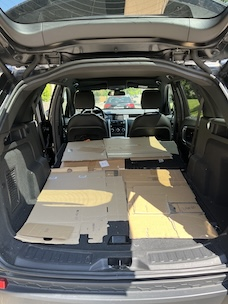
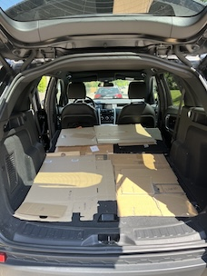

Was ich anbiete
Hallo! Ich biete eine einfache, persönliche Lösung an, um Ihre Sachen von Punkt A nach Punkt B zu transportieren — ohne Stress. Ich fahre einen geräumigen SUV, der überraschend viel Volumen bietet. Ja — selbst ein Bett oder Sofa passen ins Auto! Ich helfe gerne mit allem, von Kartons und Möbeln bis hin zum Tierarztbesuch mit Ihrem Haustier.
Keine Sorge um Treppen, Aufzüge oder Parkplätze — ich verlange keinen Aufpreis dafür. Ich erscheine einfach, helfe und erledige den Job.
Laderaumabmessungen:
Länge: 190 cm Breite: 110 cm Höhe: 90 cm
Hier sehen Sie das Auto:
 

Preise
Einfache Preise: 100 CHF pro Stunde. Das war's — keine versteckten Gebühren. Parken und Benzin übernehme ich.
Arbeitszeiten
Ich bin normalerweise nach Feierabend verfügbar — ab 17:00 Uhr, und möglicherweise auch an Wochenenden.